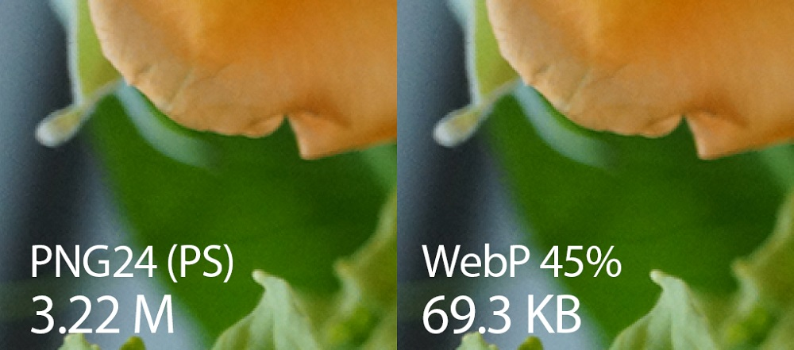

WebP — это формат файла, разработанный компанией Google в 2010 году. Его особенностью является продвинутый алгоритм сжатия, позволяющий сократить размер картинки без видимых потерь в качестве.
При разработке формата сотрудники Google использовали те же методики сжатия, что используются в компрессии кодеков VP8.
Ряд исследований показывает, что при одинаковом качестве получившейся картинки, фотографии, сжатые WebP занимают от 25% до 34% меньше места, чем JPEG. А при максимальной степени сжатия, артефакты WebP выглядят намного более естественно, как показано на примере ниже. При этом, WebP также позволяет сохранять метаданные в форматах XMP и EXIF, а также имеет функцию прозрачности. Получается, что по всем параметрам WebP как минимум не хуже, а по ряду заметно лучше чем JPEG.
WebP задумывался как универсальный алгоритм, который может работать не только в режиме сжатия фотографий с потерями, но и для сжатия без потерь, как PNG. В таком режиме он, очевидно, не будет привносить артефакты сжатия и покажет себя намного лучше чем JPEG. Однако, именно в этом особом случае, WebP, к сожалению, всё еще не способен полностью заменить PNG, так как отстаёт от него по степени сжатия подобных текстовых изобржений без потерь в 2-3 раза по размеру итогового файла.
Основным недостатком является то, что изображения WebP в настоящее время не поддерживаются всеми браузерами, хотя все больше и больше браузеров добавляют поддержку.